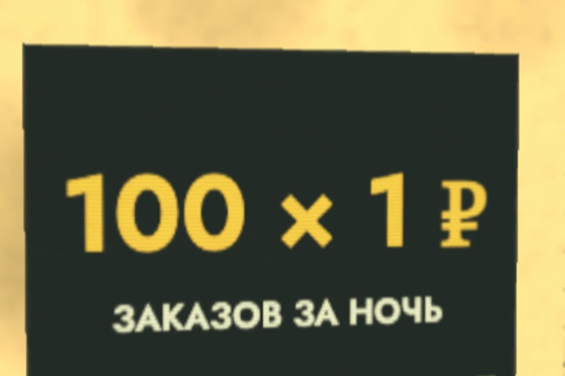

Проверь акцию до запуска
В ролике Claude сделал ровно то, что ему сказали: «акция, чтобы купили все». Купил всё один Горо со ста аккаунтов. Ниже пять проверок, которые ловят такую акцию до старта, и промпт: нейросеть пройдёт по ним вместо вас и покажет дыры.
- бесплатно
- Claude, ChatGPT, любой чат
- 10 минут до запуска
- решение остаётся за вами
К ролику «Сказал Claude сделать акцию, чтобы купили все» · обновлено 27 октября 2026

Подойдёт Claude, ChatGPT или любой чат. Чем больше цифр дадите, тем точнее разбор. Промпт проверяет то, что вы описали, а не ваши настройки: их проверяет только тестовый заказ.
Первый результат за 2 шага
Прогоните акцию через промпт-чеклист
Вставьте в чат и заполните квадратные скобки.
Проверь мою акцию до запуска. Твоя задача: найти, как она может принести убыток
или как её обойдут. Ничего не одобряй «в целом», ищи дыры.
Акция: [что за скидка, на какие товары, текст баннера]
Акционная цена: [₽]. Закупка: [₽ за штуку].
Комиссия площадки или эквайринг: [% или ₽]. Доставка: [кто платит, ₽ за заказ].
Налог: [например, УСН 6% с выручки]. Бюджет, который я готов потерять: [₽].
Сколько штук есть на складе: [шт].
Лимит на покупателя: [сколько и как он устроен: на заказ, аккаунт, телефон, адрес].
Сроки: [дата и время старта и конца, часовой пояс, выключается ли сама].
Промокоды: [есть или нет, одноразовые или общие, суммируются ли со скидкой].
Где продаю: [свой сайт / маркетплейс / офлайн].
Пройди по пунктам и по каждому дай вердикт «ок / риск / дыра» с объяснением:
1. Цена ниже себестоимости? Посчитай результат с одной штуки и максимум штук
при моём бюджете.
2. Лимит на покупателя: как его обойти? Перечисли способы.
3. Обход через новые аккаунты: какие признаки мне отслеживать и что прописать
в правилах акции.
4. Сроки: что может пойти не так на старте и в конце.
5. Промокоды: как их сложат со скидкой и где они утекут.
В конце дай три самых опасных сценария с оценкой убытка в рублях
и что поменять в акции до запуска. Если данных не хватает, спроси,
но сначала сделай разбор по тому, что есть.Тот же промпт отдельным файлом: prompts/akciya.md.
По каждому из пяти пунктов вердикт «ок / риск / дыра» с объяснением, результат с одной штуки и максимум штук при вашем бюджете. В конце три самых опасных сценария с оценкой убытка в рублях и что поменять до запуска.
Сделайте тестовый заказ самым «злым» способом
Промпт не видит ваших настроек. Тестовый заказ видит.
Проверьте сами: положите в корзину две штуки, оформите два заказа подряд, зайдите с другого браузера.
Система не пропускает заказ сверх лимита и не складывает промокод там, где не должна. Если пропустила, правьте настройки до старта: иначе пропустит и покупатель.
Пять проверок вручную
То же, что делает промпт, если хотите пройти сами.
1. Цена не ниже себестоимости
- Посчитайте, что остаётся с одной проданной штуки по акционной цене: минус закупка, комиссия площадки или эквайринг, доставка (особенно если она бесплатная для покупателя), упаковка, налог с выручки, возвраты.
- Если выходит минус, это не ошибка, а вложение в рекламу. Тогда у него должен быть потолок: сколько рублей вы готовы потерять на всю акцию. Поделите его на минус с одной штуки, и вы получите максимум штук по акции.
- Этот максимум ставьте в систему как остаток по акции, а не держите в голове.
результат со штуки = акционная цена − закупка − комиссия − доставка − упаковка − налог
максимум штук = бюджет акции ÷ |результат со штуки| (если результат с минусом)2. Лимит на покупателя
- Проверьте, на что именно повешен лимит: на заказ, на аккаунт, на телефон, на карту, на адрес доставки. «Одна штука на заказ» обходится пятью заказами подряд.
- Лимит должен работать в системе (корзина, CRM, настройки акции на площадке). Текста на баннере мало.
- Проверьте сами: положите в корзину две штуки, оформите два заказа подряд, зайдите с другого браузера.
3. Обход через новые аккаунты
- Сто аккаунтов у одного покупателя видно по совпадениям: один адрес или пункт выдачи, один телефон или карта, аккаунты созданы в день акции, одинаковые заказы с разницей в минуты.
- Решите заранее, что делаете с такими заказами, и пропишите это в правилах акции. Например: «не больше N штук на один адрес доставки, повторные заказы отменяются». Без правил отменять оформленные заказы трудно: цена на витрине обычно считается публичной офертой (ст. 494 ГК РФ). Спорные случаи обсудите с юристом.
- На маркетплейсе данные покупателей продавцу почти не видны. Там защищайтесь не проверкой людей, а ограничением количества товара в акции и сроком.
4. Сроки
- Дата и время старта и конца, часовой пояс. «До пятницы» значит до 00:00 пятницы или до 23:59?
- Акция должна выключаться сама. Проверьте, что цена откатывается автоматически, а не «завтра утром вручную».
- Что будет с заказами, оформленными в последнюю минуту, и с теми, кто положил товар в корзину до конца акции.
5. Промокоды
- Одноразовый код или общий? Общий код утекает на сайты-агрегаторы промокодов за часы.
- Суммируется ли код со скидкой акции, с бонусами, с бесплатной доставкой. Самые дорогие ошибки получаются из сложения двух скидок.
- Есть ли минимальная сумма заказа и лимит использований на один аккаунт.
- Действует ли код на товары, которые уже со скидкой.
Что было в роликепочему акция провалилась
Магазин, цифры и Горо вымышленные. Ошибка настоящая и частая: задачу поставили как желание («чтобы купили все»), а не как условия. Исполнитель, человек или ИИ, выполнил желание буквально. Цена 1 ₽ без верхней границы по количеству. Лимит «одна штука в руки» висел на аккаунте, а не на человеке. Доставка за счёт магазина. До запуска акцию никто не проверил.
Если застряли
Не все цифры для промпта под рукой
Заполните, что есть. Промпт просит сначала сделать разбор по тому, что есть, и только потом спросить недостающее. Чем больше цифр, тем точнее разбор.
Промпт сказал «ок», но я не уверен в лимите
Промпт проверяет то, что вы описали. Если лимит в системе устроен иначе, чем вы думаете, увидит это только тестовый заказ (шаг 2).
Как отменить заказы со ста аккаунтов
Без правил акции отменять оформленные заказы трудно: цена на витрине обычно считается публичной офертой (ст. 494 ГК РФ). Пропишите правила до запуска (проверка 3), спорные случаи обсудите с юристом.
Чего промпт не сделает
- Не видит ваших настроек. Он проверяет то, что вы описали. Если лимит в системе устроен иначе, чем вы думаете, увидит это только тестовый заказ.
- Не заменит юриста. Правила акции, отмена заказов и реклама со словом «бесплатно» обсуждайте с юристом или сверяйте с правилами вашей площадки.
- Не решает за вас. Убыточная акция бывает разумной, если вы знаете её цену заранее.